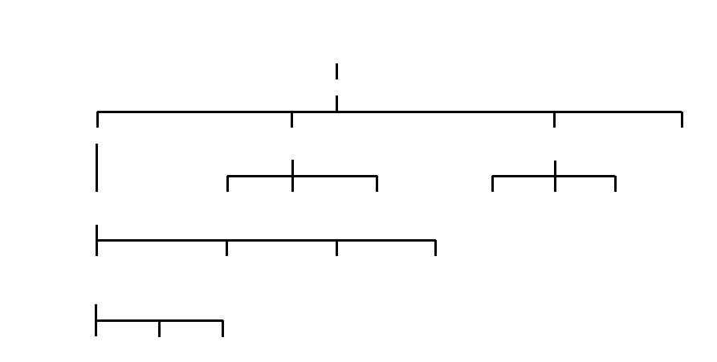
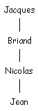
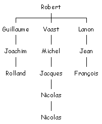

RECHERCHES DE NOBLESSE RECHERCHES DE NOBLESSE
RECHERCHES DE NOBLESSE RECHERCHES DE NOBLESSE
Référence : La Recherche de Montfaut (1463)
dans Revue de l'Avranchin, 1929-1930, fascicules n°140, 141 et
142
Provenance : Christiane Blin
ELECTION de BAIEUX (gens nobles)
Sergenterie de Briquesart
Jehan de Loucelles de cormieres
Sergenterie de Thorigny
Guillaume de Rouchelles de Rousseville (note de l'éditeur "lisez : de Loucelles")
Sergenterie de Cheux
Estienne de Loucelles de cheux
Référence : Recherche de 1523, dans Notes Le
Mâle, 2 Mi 500 R 47 ;
Provenance : Archives Départementales du Calvados
de LOUCELLES
Preuves :
Lettres du 22 août 1456 où Jean de LOUCELLES, sieur du lieu de Loucelles est titré d'écuyer d'écurie du Roy
Charte du Roy Louis du 15 juillet 1459 comme Guillaume de LOUCELLES fils dudit Jean fit hommage du fief Cordon et est dit ledit Guillaume estre noble
Lettres de François, duc de Bretagne, comte de Montfort dit de Richemont du 28 septembre 1448 comme ledit Duc alors lieutenant du Roy donne audit Guillaume de LOUCELLES alors servant le Roy, la confiscation des fiefs, biens, terres et seigneuries de Raoul et Me Richard dits PELLERIN alors officier du roi d'Angleterre, usurpateur du duché de Normandie et témoigna que ledit Guillaume de LOUCELLES était noble
Lettres de janvier 1450, comme Guillaume de LOUCELLES acquit rente et dans laquelle il est titré escuier et N?
Généalogie :
Jean de LOUCELLES sieur du lieu maintenu en 1463, Guillaume son fils idem
Référence : Recherche des élus de la
Vicomté de Bayeux faite en 1523 par Jacques du Bosc
Provenance : Archives Départementales de
la Manche
Regnaut de Loucelles, Escr produisant, était fils de n. h. Guillaume de Loucelles sgr dudit lieu, de Magny, d'Ambly et de la sergenterie de Creully du fief des Cordon, ledit Guillaume fils de Jean de Loucelles Escr sgr du lieu, Ecuyer de l'Ecurie du Roy et d'une Damelle de la maison d'Esquay en Bessin.
Référence
: Recherche de 1540, Bayeux
Provenance : Archives Départementales du Calvados, via Patrick Van Nieuwkerke
RECHERCHE PAR LES ELUS DE LISIEUX, 1540
Référence
: Recherche faite en 1540 par les élus de Lisieux , des nobles
de leur élection ; Pierre-Elie-Marie Labbey de la Roque, Caen,
1827
Provenance : Gallica
Criqueville, n°231. Cosme de Loucelles a dit être procréé de noblesse ancienne et issu de Guillaume de Loucelles,
vivant en 1419 et titré escuyer dans une lettre de la dite
année, duquel il a dit fournir sa descente par ses
écritures, dont la copie est demeurée au greffe. Non
obstant lesquelles le procureur du Roi a requis qu'il soit assis.
Référence : Recherches de la Noblesse de
Normandie par Stephano-Louis-Marye de Merval, 1 Mi 395
Provenance : Archives Départementales de
la Manche
de Loucelles :
Jacques, sr de Mauny fils Michel demeurant à Rousseville sergenterie Thorigny, eslection de Bayeux a Nicolas et Jacques pour fils
Briand, Guillaume et Pierre, mineurs fils Jacques frère puisné dud Jacques demeurant à Auvers sergenterie des Vez eslection de Bayeux
François autre frère desd. Jacques demeurant au susdit Rousseville
Nicolas autre frère estudiant à Paris
Guillaume sr de Vieuses oncle des dessusd. fils Robert demeurant audit Rousseville a pour fils Julian, Jean et Joachim veu leurs tiltres d'ancienne noblesse jouiront
Guillaume fils Zanon fils dud. Robert, Jean et Vast frères dud lieu demeurant aud. Rousseville jouiront
Référence : Recherche de 1624, dans Notes le
Mâle, 2 Mi 500 R 48 (d'après Fonds Martainville,
Rouen)
Provenance : Archives Départementales du Calvados
de LOUCELLES : de gueules à une quintefeuille d'argent au chef d'hermines

(x) = deschargés ; 24 pièces produites 1512-1622
RECHERCHE DE CHAMILLART (1666)
Référence : Recherche de la Noblesse faite par
ordre du Roi (Louis XIV) en 1666 et années suivantes ; Guy
Chamillart ; édition de 1887
Provenance : Archives Départementales de
la Manche
1ère partie (anciens nobles trouvés dans Monfault en 1463) p.174
de Loucelles : portent de gueules, chargé d'une quintefeuille d'argent ; au chef d'argent, semé d'hermines sans nombre

Jean de Loucelles, Er, sieur du Fournel, demeurant à Englesqueville, élection de Bayeux, 28 ans ; R. R.
Jacques épousa
Dlle Cardine du Praël, en 1588
Briand, Dlle Marie Estienne.
Nicolas, Dlle
Catherine Loir

Nicolas de
Loucelles, Er, sieur
de Mauny, demeurant à Rouxeville ; Rolland, Er, sieur
de La Noë et du Domaine, et François de Loucelles, Er, sieur
de La Heurtaudière, de ladite paroisse, sergenterie de
Thorigny.
Robert avait épousé Dlle
Marie de Parfouru.
Lanon, Dlle Perrette de Louvières, en 1554.
Guillaume, Dlle
Louise Habel, en 1572.
Michel, fils Vaast, Dlle
Perrette Le Roy.
Jacques, fils Michel, Dlle
Marie Moisson, en 1589.
Nicolas, Dlle
Marie Le Capon, en 1624
Nicolas, fils dudit Nicolas, Dlle
Diane Le Chevalier.
Jean, fils Lanon, Dlle
Louise de Royville, en 1609
François, fils Jean, Dlle Anne
Le Cocq, en 1645
Joachim, Dlle Anne
Potier, en 1599
Rolland, Dlle
Catherine Auvray, en 1640
RECHERCHE DE LA GALISSONNIERE (1666)
Référence : Recherche de la Galissonnière - Election
de Pont-l'Evêque ; Pierre L'Estourmy ; 2001
Provenance : Archives Départementales de la Manche
p.399 : portent : de gueules à la quintefeuille d'argent, au chef d'hermines. sup. cim. lions d'or
Jean de Loucelles, sr du lieu, demeurant à Beuvron. N'a produit et est pauvre. Ses consanguins ont produit à Caen.
Bibliographie : Vasseur (Ch.), Le Martologue de Tourgéville
Le Coquet (plus souvent : Coquet)
I. Julien Le Coquet, esc., sr de Beuvrigny [Beuvrigny, canton de Tessy-sur-Vire]. Père de :
a) Jean. Curé de Beuvrigny
b) Cristophle. Qui suit
II. Cristophle (note : Cristophle, alias Charles, sr de Montrocq. Epousa le 22 octobre 1523, Jeanne de la Motte, fille de Jean de la Motte, sieur du lieu, et de Renée de Loucelles (Bibl. Caen Mss. In. Fol. 307.4). Epousa Jeanne de la Motte.
Documents présentés : [...] Dans l'acte passé devant les notaires de Condé sur Noireau le 18 may 1540 contre Cristophle Coquet, esc., sr de Beuvrigny, et noble homme François de Loucelles est fait mention du traité de mariage fait entre led. Cristophle Coquet, esc., fils de Jullien, avec damoiselle Jeanne de la Motte [...].
dernière modification : 28 janvier 2012